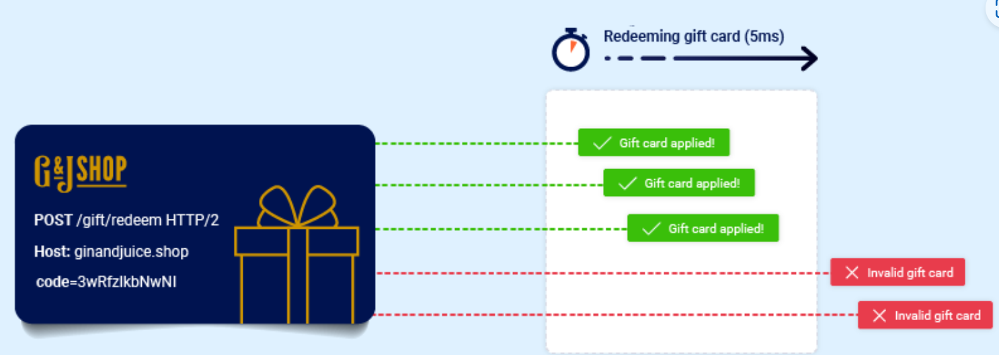
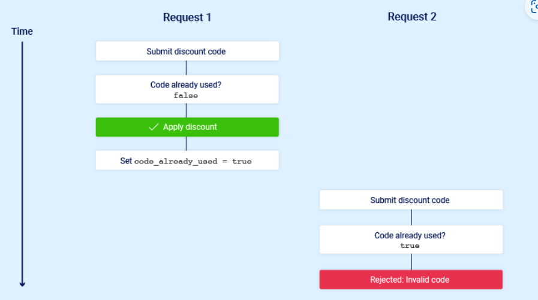
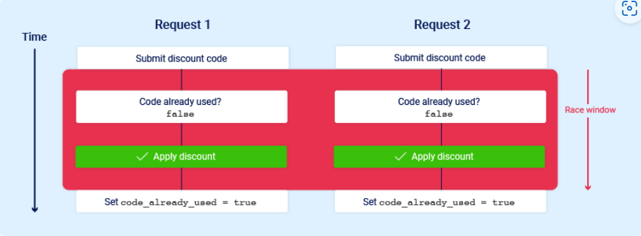

条件竞争
定义
条件竞争是一种常见的漏洞类型，和业务逻辑漏洞有着紧密的联系。当网站处理并发请求却没有做好保障措施时，就容易产生条件竞争漏洞。具体地说，当网站在处理并发请求时，可能会导致多个不同的进程同时访问相同的数据，这就会产生”碰撞“，从而导致应用程序出现非预期的行为。条件竞争攻击就是指黑客利用精心设计的请求故意产生”碰撞“，并出于恶意的目的利用出现的非预期行为。

可能发生碰撞的时间段称为“竞争窗口”。 例如，这可能是与数据库的两次交互之间的几分之一秒。
与其他逻辑漏洞一样，条件竞争漏洞产生的影响在很大程度上取决于应用程序自身以及产生该漏洞的特定功能。
接下来的内容主要讲述以下的知识：
如何识别和利用不同类型的条件竞争漏洞
如何利用 Burp Suite 的内置工具进行条件竞争攻击
有关于条件竞争的方法论——能够帮助我们检测出隐藏在多个步骤的过程中的新型条件竞争漏洞
在本节中，您将学习如何识别和利用不同类型的条件竞争漏洞。 我们将教您 Burp Suite 的内置工具如何帮助您克服执行经典攻击的挑战，以及一种经过试验和测试的方法，使您能够在隐藏的多步骤过程中检测新类别的竞争条件。 这些远远超出了您可能已经熟悉的限制超限。下面讲述条件竞争漏洞的几种常见类型。
限制超限条件竞争
最常见的一类条件竞争漏洞是黑客能够越过应用程序业务逻辑施加的某种限制。
举个例子，假设有一家网店，允许消费者在结账时输入促销码对订单进行打折。一般来说，应用程序实现打折的业务逻辑如下：
检查促销码是否已被使用过
对订单总额进行打折
在数据库中更新相应记录，表明促销码已被使用过

现在考虑这样一种情况：如果某个消费者之前从未使用过该促销码，而是在几乎同一时刻尝试使用该促销码两次，这会发生什么？

正如您所看到的，应用程序通过一个临时子状态进行转换； 也就是说，在请求处理完成之前进入然后再次退出的状态。 在这种情况下，子状态在服务器开始处理第一个请求时开始，在更新数据库以指示您已经使用过此代码时结束。 这引入了一个小的比赛窗口，在此期间您可以根据需要多次申请折扣。
这种攻击有很多变体，包括：
多次兑换礼品卡 对产品进行多次评级 提取或转账超过您账户余额的现金 重复使用单个验证码解决方案 绕过反暴力破解速率限制 限制超限是所谓的“检查时间到使用时间”(TOCTOU) 缺陷的一个子类型。 在本主题的后面部分，我们将介绍一些不属于这些类别的竞争条件漏洞示例。